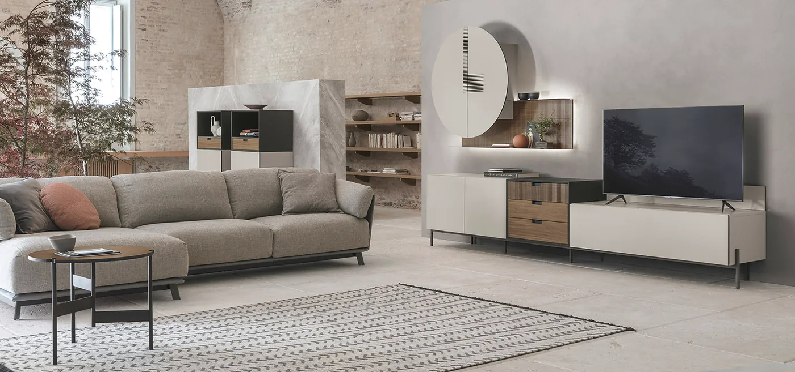
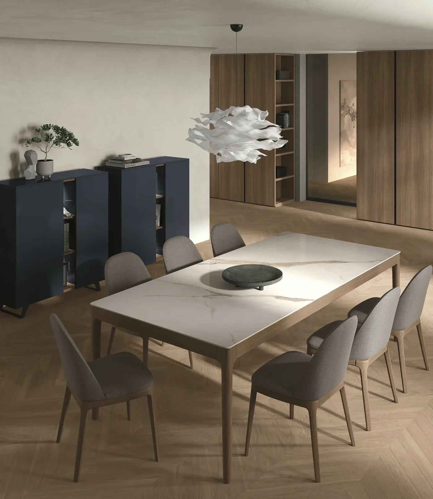
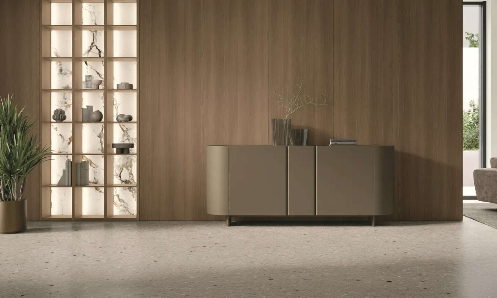
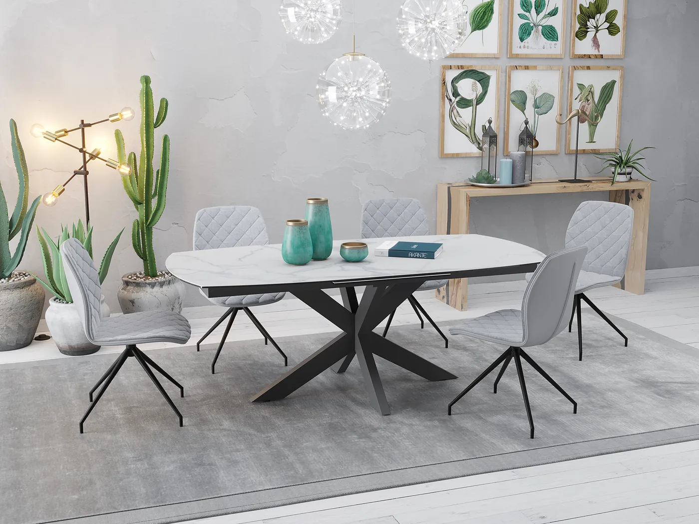

Meuble TV, bibliothèque, buffet
Séjour : meubles TV, bibliothèques et buffets.
Un écran, des livres, de la vaisselle, des objets à exposer : les systèmes Tomasella se composent module par module selon votre mur, vos rangements et votre intérieur.
- Composé module par module
- Projection 3D de votre projet
- Première visite et conseil offerts
Par où commencer
Composez votre séjour autour de vos besoins.
Que souhaitez-vous ranger, exposer ou dissimuler ? Nous partons de votre mur pour choisir les modules et les finitions qui correspondent à votre pièce.
-

Le mur de la télévision
Cacher les câbles, montrer le reste.
Écran, box et câbles trouvent leur place dans une composition Atlante. Associez meubles bas ou suspendus, portes et niches ouvertes pour ranger ce qui doit disparaître et mettre le reste en valeur.
Tout Tomasella -

Livres et objets
Une bibliothèque adaptée à votre mur.
Sur toute la largeur du mur ou sur une seule travée, associez niches ouvertes, éclairage selon la composition et rangements fermés. Les modules s’ajustent à l’espace disponible.
-

Le quotidien
Time : des rangements pour une pièce qui vit.
Le système Time associe laque et bois dans des compositions aux lignes simples. Choisissez les surfaces et les rangements en fonction de ce que vous utilisez chaque jour.
-

La salle à manger
Un buffet qui s’accorde au reste du séjour.
Retrouvez les bois et les laques du meuble TV dans votre buffet. Nous vous aidons à composer un ensemble cohérent avec votre table et votre canapé.
Voir les tables et chaises

Du salon au séjour complet
Du canapé au séjour complet.
Vous avez trouvé votre canapé, mais vous hésitez encore sur la couleur, le meuble TV ou la table ? Nous pouvons composer le reste de la pièce avec vous, sans obligation de tout changer.
-
Votre pièce, notre point de départ.
Apportez une photo et les dimensions de votre mur. Si vous préférez, nous venons relever les mesures chez vous.
-
Des matières qui s’accordent.
Comparez le tissu du canapé, les bois et les laques côte à côte, avec la photo de votre pièce.
-
Une composition adaptée à votre séjour.
Meuble TV, bibliothèque, buffet et table : nous choisissons ensemble les éléments qui correspondent à votre espace.
-
Visualisez votre projet en 3D.
Découvrez les volumes, les teintes et les passages avant de décider. La projection 3D vous aide à vous représenter l’ensemble.

Matières et finitions
Les finitions se choisissent au magasin, échantillons en main.
Comparez les échantillons avec une photo de votre pièce. Les buffets existent dans les mêmes finitions que le meuble TV.
Voir les matièresAutour du séjour
Pour compléter la pièce.
-

Le salon
Trois façons de choisir votre canapé.
-

La table et les chaises
Tables fixes italiennes ou à rallonge, et chaises assorties.
-

Le sur mesure
Pour un mur avec un recoin ou une pente, nous concevons le meuble au centimètre près.


Composons votre séjour.
Apportez une photo de la pièce et les dimensions du mur : nous composons le meuble avec vous, module par module, et nous vous le montrons en projection 3D. Si vous préférez, nous venons prendre les mesures chez vous.
- Lundi
- 13h30 – 18h30
- Mardi au samedi
- 10h30 – 18h30
- Dimanche
- Fermé
- Téléphone
- 064 46 07 72
- Livraison
- Par nos soins, dans le Hainaut (Binche, La Louvière, Mons, Charleroi…) et la province de Namur
Pour un projet plus loin, ailleurs en Belgique ou à l’étranger : parlons-en.